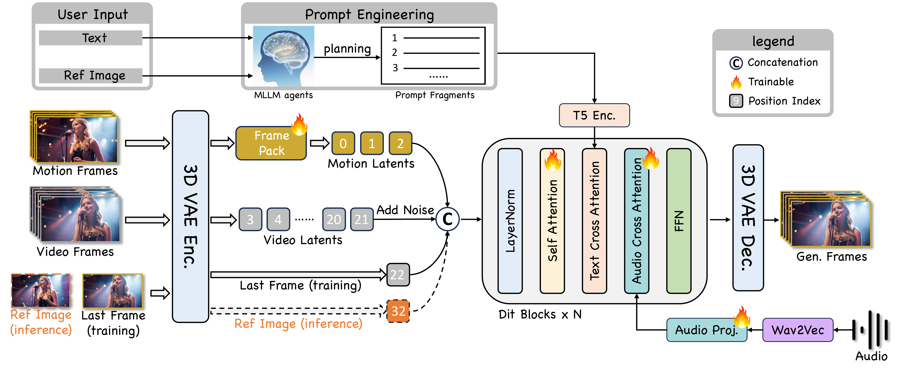
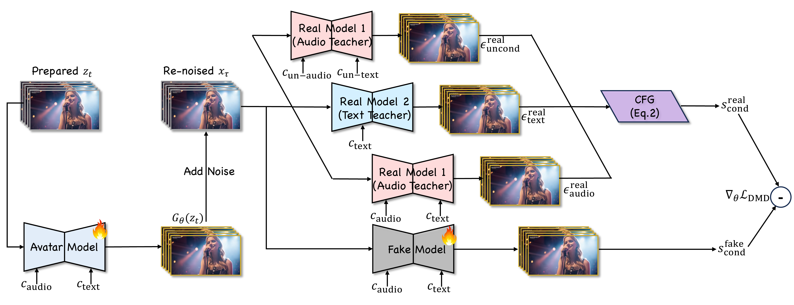

Existing video avatar models have demonstrated impressive capabilities in scenarios such as talking, public speaking, and singing. However, the majority of these methods exhibit limited alignment with respect to text instructions, particularly when the prompts involve complex elements including large full-body movement, dynamic camera trajectory, background transitions, or human-object interactions. To break out this limitation, we present JoyAvatar, a framework capable of generating long duration avatar videos, featuring two key technical innovations. Firstly, we introduce a twin-teacher enhanced training algorithm that enables the model to transfer inherent text-controllability from the foundation model while simultaneously learning audio–visual synchronization. Secondly, during training, we dynamically modulate the strength of multi-modal conditions (e.g., audio and text) based on the distinct denoising timestep, aiming to mitigate conflicts between the heterogeneous conditioning signals. These two key designs serve to substantially expand the avatar model's capacity to generate natural, temporally coherent full-body motions and dynamic camera movements as well as preserve the basic avatar capabilities, such as accurate lip-sync and identity consistency. GSB evaluation results demonstrate that our JoyAvatar model outperforms the state-of-the-art models such as Omnihuman-1.5 and KlingAvatar 2.0. Moreover, our approach enables complex applications including multi-person dialogues and non-human subjects role-playing.

Figure 1: Overview of our JoyAvatar pretraining pipeline.

Figure 2: Pipeline of Twin-Teacher Enhanced DMD Post-Training.
Dynamic Camera Trajectory
JoyAvatar can handle cinematographic camera motion, encompassing rotations, zooms, and dynamic following of human subject.
180-degree orbiting shot. The robot’s head tilts mechanically 90 degrees to the right, raises a finger to perform a distinct tapping gesture on an invisible virtual screen in mid-air.
The camera slowly pulls back as the speaker, with a solemn expression, looks directly into the lens.
An old man holds his chest in pain as the camera pushes forward.
Man talking, standing, walking forward; camera tracks back. Holds a calm look at the camera for his final words.
Fixed shot, blurred background. Pixie: anxious -> relaxed. Ears twitch while speaking; suddenly covers mouth with hands, eyes roll up; then releases, pats chest; finally leans in for a close-up funny face.
A woman singing while walking the runway, under flashing, vibrant, multicolored lights.
Complex Full-body Motion
JoyAvatar is capable of synthesizing a range of complex human motions, including but not limited to walking, running, dancing, and object manipulation.
A young man lifts a dumbbel and moves from indoors to outdoors while working out.
A female warrior is aiming and firing, then suddenly stands up, raising her gun as she charges forward.
A woman with a handbag, wearing a radiant and confident expression, walks forward while talking animatedly.
A young man swings his sword with practiced skill, cutting a heroic and commanding presence.
A young man sings while walking slowly forward, with the camera steadily tracking him.
A character is running with a smile, then turns to speak directly to the camera with a natural ease.
The girl picks up the chocolate box, shows it to the viewer, then takes out a piece of chocolate and eats it.
A little girl, holding a microphone, sings cheerfully while bouncing and dancing joyfully.
The girl in the frame stands up, singing as she walks forward, her skirt swirling as she moves.
An elegant elder takes a drink from his wine flask while reciting poetry, all beneath a bright moon and starry sky, overlooking a vibrant, lantern-lit town below.
Human-Object Interactions (HOI)
JoyAvatar can generate scenes involving complex human-object interactions and inter-object interactions.
A smiling farmer watches as his dog walks up and rubs against his leg. He bends down to pet the dog, as the sun rises slowly in the background.
A little fairy in the scene is singing, when suddenly a blue fairy appears, and the two fairies then sing together.
A little girl is first singing with a beaming smile, then she picks up a camera from the table, points it toward the viewer, and the flash goes off.
A woman stands indoors, speaking to the camera. She begins by picking up a vase from a cabinet, then gazes at it contemplatively, and finally places it on a chair within the scene. (Keep the character fully in frame throughout.).
A puppy barks, gets up, and walks. Another puppy joins. A friendly meeting, then they walk on together..
A Halloween doll is singing. Suddenly, a pink doll appears and joins in the song.
Diverse Input
Despite being trained solely on real human data, JoyAvatar demonstrates generalization by successfully animating a variety of non-human subjects, including cartoons, dolls, and other stylized avatars.
A kitten in front of the pyramids, having fun and talking.
A lion cub rides a scooter on a road, wearing a happy expression, with the roadside lined with blooming flowers.
Pikachu is singing and dancing, full of lively gestures.
A pea-shaped little sprite is talking, while nodding and waving.
No prompts.
An animal singing; twinkling eyes, twitching whiskers, paws kneading the air. An adorable little performer.
A polar bear is singing and playing the guitar.
A dog, wagging its tail, approaches a nearby purple flower and sniffs at it.
A woman is singing.
No prompts.
Multi-Talk Demonstration
JoyAvatar is capable of modeling dialogues involving multiple characters, ensuring that their facial expressions and hand motions are dynamically aligned with the context of conversation.
Long-Duration Video Generation
JoyAvatar can efficiently support minute-level avatar video generation.
Ethical Considerations
The demo assets (images and audios) originate either from public sources or are AIGC model generated, serving the sole purpose of illustrating the capabilities of our model. The generated content is for academic use only and commercial use is not permitted.
If there are any concerns, please contact us (linke.jason@jd.com) and we will delete it in time. The template for this webpage is adapted from Omnihuman Series. Special thanks to the author for releasing this wonderful template.
BibTeX
If you find this project useful for your research, please consider citing:
@misc{wang2026joyavatarunlockinghighlyexpressive,
title={JoyAvatar: Unlocking Highly Expressive Avatars via Harmonized Text-Audio Conditioning},
author={Ruikui Wang and Jinheng Feng and Lang Tian and Huaishao Luo and Chaochao Li and Liangbo Zhou and Huan Zhang and Youzheng Wu and Xiaodong He},
year={2026},
eprint={2602.00702},
archivePrefix={arXiv},
primaryClass={cs.CV},
url={https://arxiv.org/abs/2602.00702},
}